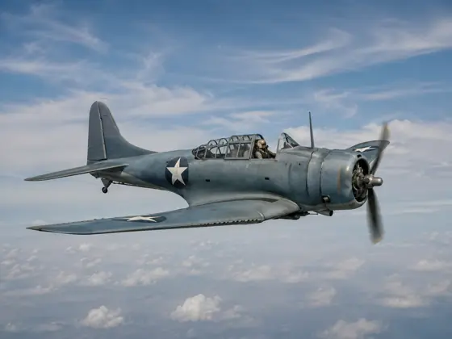

C.202 operations · 1941–1944
The Macchi C.202 Folgore gave Italian fighter units a modern, fast and elegant aircraft that could compete with Allied fighters in the Mediterranean. It served heavily over North Africa, Malta, Sicily and Italy, with some captured and co-belligerent routes later. A good C.202 build starts with the theatre and unit: desert Folgore, Malta/Sicily route, mainland defence route, Croatian/captured route or museum/reference subject.

Role & strengths
- Italian DB 601-powered fighter with excellent handling and Mediterranean service
- North Africa, Malta, Sicily, Italian mainland, Croatian/captured and reference routes
- Slim Macchi fuselage, underwing radiators, sand filter options, Breda-SAFAT armament and white theatre bands
- Italian smoke-ring/mottle camouflage, sand/green/brown schemes, grey undersides and Regia markings
- Sun fading, desert dust, oil streaks, exhaust staining, wing-root wear and restrained chipping
Key theatres
- North Africa desert fighter route
- Malta and Sicily Mediterranean routes
- Italian mainland defence route
- Croatian/captured and survivor-reference routes
Specification C.202
Survivor/reference today
C.202 references rely on survivors, restorations and period photos. Use them for the Macchi shape, cockpit, radiators and gear, but verify camouflage and unit markings separately.
View referencesTimeline highlights
Build this C.202 as…
Pick theatre and series first. Desert, Malta/Sicily, mainland, captured/Croatian and survivor routes all need different markings and weathering.
Aircraft identity
Smoke-ring and Italian mottle schemes are aircraft-specific. Practise the pattern before painting the model.
C.202 series differ in filters, equipment and armament details. Match the kit, theatre and markings before committing.
Paint scheme cards
North Africa route with dust, sun fading and white theatre bands.
Malta/Sicily route with Italian mottle and grey undersides.
Italian mainland or later route with different wear and marking checks.
Weather radiators, wing roots, tyres, exhausts and belly grime logically.
Campaign cards
Classic Folgore route with sand/green camouflage, dust and sun fading.
Mediterranean route with smoke-ring/mottle camouflage and theatre markings.
Later defence route with different surface wear and unit markings.
Operator-specific route with non-standard markings and repaint checks.
Build difficulty and related guides
Medium-high. The airframe is elegant, but camouflage is demanding.
High. Smoke-ring and Italian mottle patterns need control and patience.
Medium-high. Desert fading and dust should not bury the markings.
Macchi C.202 Folgore units and operators
Sortable C.202 cards covering North Africa, Malta/Sicily, Italian mainland, captured/Croatian and survivor/reference routes.
C.202 Folgore operating map
Airfield info
Click a marker to show linked C.202 unit cards and modelling notes.
Campaign timeline
Survivors
Books and reference sources
C.202 Folgore build guide
C.202 Folgore videos, photos and archive material
Media replaces the old separate walkaround tab: cockpit, exhaust, undercarriage, markings, survivor references, archive imagery and video cards are grouped here.